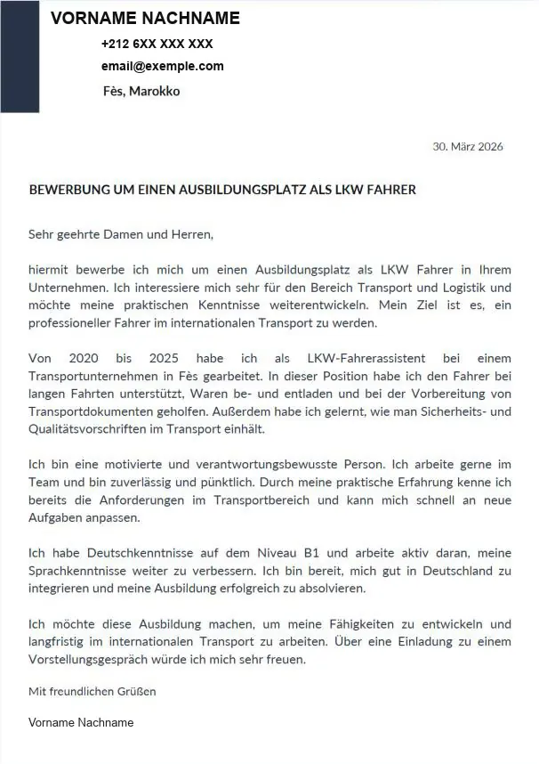

Anschreiben: كيف تكتب رسالة ترشيح ألمانية مقنعة
الـAnschreiben هو المكان الوحيد في الملف الذي تتكلم فيه مباشرة مع الشركة. الـLebenslauf يقول ماذا فعلت، والـAnschreiben يقول لماذا أنت الشخص المناسب لهذه الشركة بالذات. هذا الدليل يشرح البنية والجمل المستعملة.
بنية Anschreiben حسب DIN 5008
يتبع Anschreiben المعيار الألماني DIN 5008: المرسل، ثم المرسل إليه، ثم المكان والتاريخ، ثم الموضوع (Betreff) والتحية. بعدها يأتي النص في ثلاثة أجزاء (مقدمة، جزء رئيسي، خاتمة) ثم Mit freundlichen Grüßen والتوقيع، والكل في صفحة واحدة.
المعيار الألماني DIN 5008 يحدد مكان كل عنصر في الصفحة. بالترتيب من الأعلى إلى الأسفل:
- المرسل (Absender): اسمك، عنوانك، هاتفك، بريدك.
- المرسل إليه (Empfänger): اسم الشركة، اسم المسؤول، العنوان.
- المكان والتاريخ على اليمين: Fès, 22.11.2026
- الموضوع (Betreff) بخط عريض، بدون كتابة كلمة "Betreff": Bewerbung um einen Ausbildungsplatz als Koch
- التحية: Sehr geehrte Frau Müller,
- النص: مقدمة، جزء رئيسي، خاتمة.
- التحية الختامية: Mit freundlichen Grüßen ثم التوقيع والاسم.

المقدمة: لماذا تكتب؟
في جملتين أو ثلاث، اذكر المنصب الذي تطلبه، وأين وجدت العرض، ولماذا تهمك هذه الشركة بالذات. ابدأ بسبب قوي أو تجربة حقيقية بدل الجملة المكررة „Hiermit bewerbe ich mich…“.
جملتان أو ثلاث: أي منصب تطلب، وكيف عرفت العرض، ولماذا تهمك هذه الشركة. تجنب البداية المملة „Hiermit bewerbe ich mich…" إن استطعت، أو أكمِلها مباشرة بسبب قوي. أمثلة:
- Mit großem Interesse habe ich Ihre Anzeige für einen Ausbildungsplatz als Koch auf Ausbildung.de gelesen.
- Seit meinem Praktikum in einem Hotel in Agadir weiß ich, dass ich in der Gastronomie arbeiten möchte.
الجزء الرئيسي: ماذا تقدم للشركة؟
اربط تجربتك مباشرة بما تطلبه الشركة، باختيار مثالين أو ثلاثة أمثلة ملموسة بدل تكرار الـLebenslauf. اذكر تدريبًا أو عملًا قريبًا من المهنة، ومستواك في الألمانية، وصفات مثل zuverlässig وteamfähig مع دليل عليها.
هنا تربط تجربتك بما تطلبه الشركة. لا تكرر الـLebenslauf، بل اختر 2 أو 3 أمثلة ملموسة:
- تدريب أو عمل يشبه المهنة المطلوبة، وماذا تعلمت منه.
- مستواك في الألمانية وكيف تواصل تحسينه.
- صفات شخصية مع دليل: zuverlässig (جدير بالثقة)، teamfähig (تعمل في فريق)، belastbar (تتحمل الضغط).
الخاتمة
اختم بجملة مهذبة تطلب فيها مقابلة، مثل Über eine Einladung zu einem Vorstellungsgespräch würde ich mich sehr freuen. وأضف تاريخ البدء الممكن إذا كان العرض يطلبه.
جملة تطلب فيها المقابلة بأدب، وتذكر فيها تاريخ البدء الممكن إن لزم:
- Über eine Einladung zu einem Vorstellungsgespräch würde ich mich sehr freuen.
- Ich stehe Ihnen ab August 2027 zur Verfügung.
أخطاء يجب تجنبها
أكثر ما يُسقط Anschreiben هو تجاوز صفحة واحدة، أو نسيان اسم شركة أخرى بعد النسخ، أو الترجمة الآلية دون مراجعة. ركّز على ما تقدمه للشركة بدل ما تريده من ألمانيا، ولا تنسَ التوقيع والتاريخ.
- أكثر من صفحة واحدة.
- اسم شركة أخرى منسي في الرسالة بعد النسخ واللصق.
- ترجمة حرفية من العربية أو الفرنسية عبر أداة آلية دون مراجعة.
- التركيز على "ماذا أريد من ألمانيا" بدل "ماذا أقدم للشركة".
- نسيان التوقيع أو التاريخ.
أسئلة شائعة
ما الفرق بين Anschreiben وMotivationsschreiben؟
الـAnschreiben رسالة رسمية من صفحة واحدة تُرسل مع كل ترشيح لعمل أو Ausbildung. الـMotivationsschreiben غالبًا أطول وأكثر شخصية، ويُطلب في الجامعات أو بعض البرامج والمنح.
هل أكتب Sehr geehrte Damen und Herren؟
فقط إذا لم تجد اسم المسؤول. ابحث في إعلان العرض أو موقع الشركة؛ رسالة موجهة باسم الشخص (Sehr geehrte Frau Müller,) تترك انطباعًا أفضل.
هل يمكن استعمال نفس Anschreiben لكل الشركات؟
البنية نعم، لكن الفقرة الأولى والثانية يجب أن تتغير حسب الشركة والمهنة. الرسالة العامة تُكتشف بسرعة.